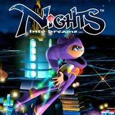

nights-nx installer
Builds the Nintendo Switch package of NiGHTS into Dreams... (Xbox Live Arcade) from your own copy. Everything runs in this browser: nothing is uploaded.
prototype1. Choose your game
Both of your Xbox 360 packages, chosen together: the game (title 58411268, in
Content/0000000000000000/58411268/000D0000/ of a console's storage) and its title update (in
000B0000/, or a TU_... file of the console's Cache). Or the folder the game
was extracted to, with the update's default.xexp beside default.xex.
Nothing chosen yet.
2. Create the package
The page makes the game's shaders from your files and compiles them for the Switch, which takes a few minutes and a few GB of memory. The zip then downloads while it is written (about 2 GB).
3. Copy it to the Switch
- Extract
nights-nx.zipto the root of the SD card: it makesswitch/nights-nx/. - Start
nights-nx.nrofrom the Homebrew Menu with a title takeover (hold R while starting a game). - Its settings (language, SMAA, controls) are in
switch/nights-nx/renut.toml, written at the first start.